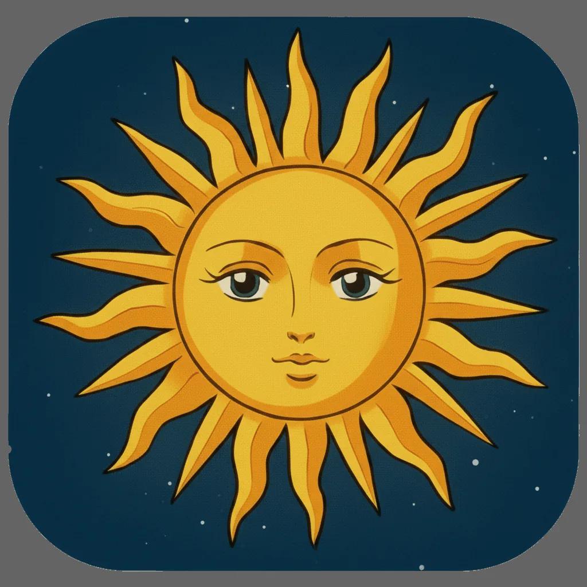

Track the sun and moon in real time
See their positions and paths across the sky, then check local sunrise, sunset, moonrise and moonset times for your location.
Sunrise, Sunset & Moon Phases
Track the sun and moon in real time on iPhone and iPad. Check sunrise, sunset, moonrise, moonset, twilight, moon phases and golden hour, then explore celestial paths, weather and upcoming sky events.
Free to download · English, Spanish, French, German, Italian, Japanese, Korean, Portuguese and Simplified Chinese

Discover the cosmos from your pocket.
Explore the sky
Know when the light changes, follow the moon through its phases and explore the sky from wherever you are.
See their positions and paths across the sky, then check local sunrise, sunset, moonrise and moonset times for your location.
Find golden hour, blue hour, twilight and solar noon times to plan a landscape shoot, a walk or any moment you want to catch in the right light.
Explore the lunar cycle alongside eclipses, meteor showers, solstices, equinoxes and other events in the astronomical timeline.
Use your surroundings to understand where the sun and moon will appear, and explore stars, planets and constellations with educational information.
See forecast conditions when planning outdoor photography or a sky-watching trip. Weather forecasts require an internet connection.
Photo Travel helps you find places currently experiencing sunrise or sunset, so you can explore the changing light beyond your own location.
Add home screen and lock screen widgets for sunrise, sunset, golden hour, blue hour and upcoming astronomical events.
Your location stays on your device and solar and lunar calculations run locally, so core tracking works without an internet connection.
Turn the planetarium into a calm view of Earth, day and night cycles, and stars positioned for your location.
Illuminating updates.
It is a sun and moon tracker for iPhone and iPad. Follow their positions and paths, check rise and set times, explore moon phases, and plan around golden hour and astronomical events.
Yes. The app includes sunrise, sunset, moonrise, moonset, twilight phases, golden hour, blue hour, moon phases, eclipses, meteor showers, solstices, and equinoxes.
Your location stays on your device. Solar and lunar calculations run locally, so core tracking works offline. Weather forecasts require an internet connection.
The app is available in English, Spanish, French, German, Italian, Japanese, Korean, Portuguese, and Simplified Chinese.